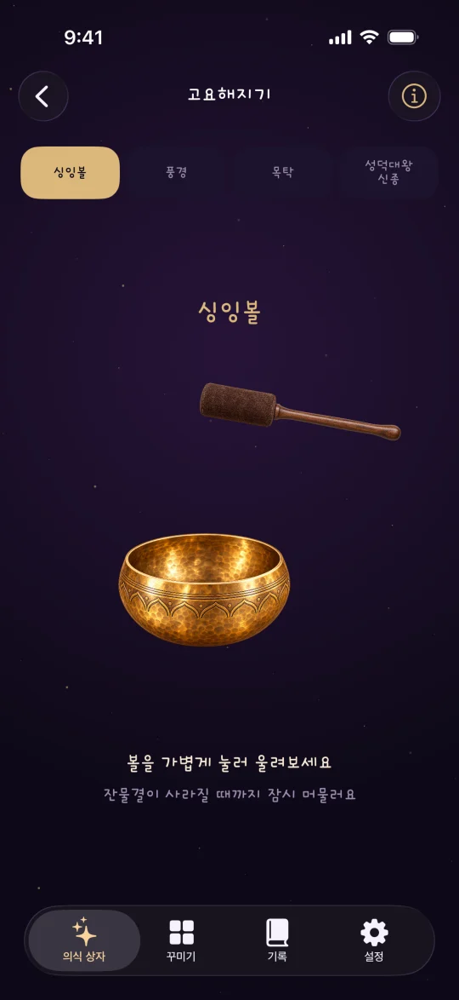

Explore Living Heritage
Watch Cheoyongmu, Bukcheong Lion Play, Ganggangsullae, and Jisinbalgi on a 3D stage. Read the stories behind the movements as you watch.
Jipmongi · iPhone
Meet Jipmongi, a little straw doll who introduces you to Korean traditions. Explore the stories behind traditional dances and games, write down what’s on your mind, or take a break with a singing bowl.
Watch Cheoyongmu, Bukcheong Lion Play, Ganggangsullae, and Jisinbalgi on a 3D stage. Read the stories behind the movements as you watch.
Write down what’s weighing on you and let it go in a symbolic ritual with a little doll.
Gently tap the singing bowl and listen as its sound fades with the ripples.

